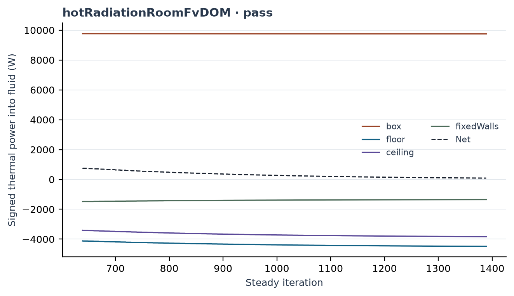

OpenFOAM Thermal Verification
A thermal solver can stop before its energy budget balances.
After tightening convergence on the same coarse room setup, wall energy imbalance fell from 7.96% to 0.918%.
Guanyu Zou · Researcher & technology builder
I apply the habits of materials research to engineering simulations, reusable knowledge tools and decisions that need better evidence.
Three projects that show how I check a result, make evidence reviewable and turn a method into a tool.

A thermal solver can stop before its energy budget balances.
After tightening convergence on the same coarse room setup, wall energy imbalance fell from 7.96% to 0.918%.

Application drafts can obscure which sources support each requirement.
The synthetic demo traces matches to their sources and holds unreviewed translations out of draft wording.

A palette is hard to reuse when the role of each colour is unclear.
Transfer Lab lets you review a mapping and export JSON, CSS variables and a report.
Three approaches to computational materials research at The University of Manchester.
Stochastic 3D fibre geometry, coupled conduction and radiation, and mesh and energy-balance checks in COMSOL.
Regression comparisons, grouped cross-validation and holdout tests, and transferring fitted material models into simulation.
Voxel segmentation, porosity, orientation and connectivity measurements, and comparisons against reference volumes.
Browse the full collection, from computational materials research to independent experiments in decision support.
Simulation, scientific computing and ways to make technical workflows repeatable.
A thermal CFD study that tested whether solver convergence was enough to trust the energy balance.
Coupled heat transfer in heterogeneous materials, with parameterised geometry and reference checks.
Surrogate models for scientific and engineering workflows, supported by grouped validation and held-out tests.
Volumetric image processing and structural measurement, with attention to representation and reproducibility.
Reusable simulations, data checks and reporting with traceable settings.
Tools that turn source evidence and expert judgement into reusable methods.
An editorial workflow that ties manuscript claims, figure structure and revisions to the available evidence.
A workflow for extracting reusable editorial rules from a bounded corpus and recording the evidence for each rule.
A visualisation tool for inspecting colour roles and transferring a reviewed palette to a new scientific figure.
Independent experiments in decision support, built around explicit questions and testable assumptions.
A workbench that traces job requirements and bilingual draft language back to a candidate’s evidence.
A negative historical backtest led to a reproducible tool for comparing portfolio plans under declared constraints.
Exploring how physical knowledge and reliable data can guide learning tasks for materials analysis.
Turn an open question into something I can test and a method someone else can use.
Frame the decision and set a fair comparison.
Historical study and redesignTrace a claim to its sources and look for exceptions.
Rule extraction protocolMake each requirement inspectable alongside its evidence.
Requirement-to-evidence mappingUse AI to explore and implement against explicit acceptance criteria.
Project contribution recordCheck the energy balance alongside solver convergence.
Verification report and dataExport a reviewed colour mapping so others can reuse it.
Transfer Lab and exportsAbout
My background is in computational materials research at The University of Manchester, where my work spans multiphysics simulation, scientific machine learning and microstructure analysis.
I’m curious about how the same habits apply to unfamiliar problems. I enjoy framing a question, testing ideas against evidence and turning a useful method into something others can use. AI helps me explore and build. I rely on evidence and scientific judgement to decide what holds up.
PhD viva passed with minor corrections on 20 November 2026. Currently completing thesis corrections.
I’m interested in scientific software, application science and engineering, and collaborations that put technical evidence to work.
Contact